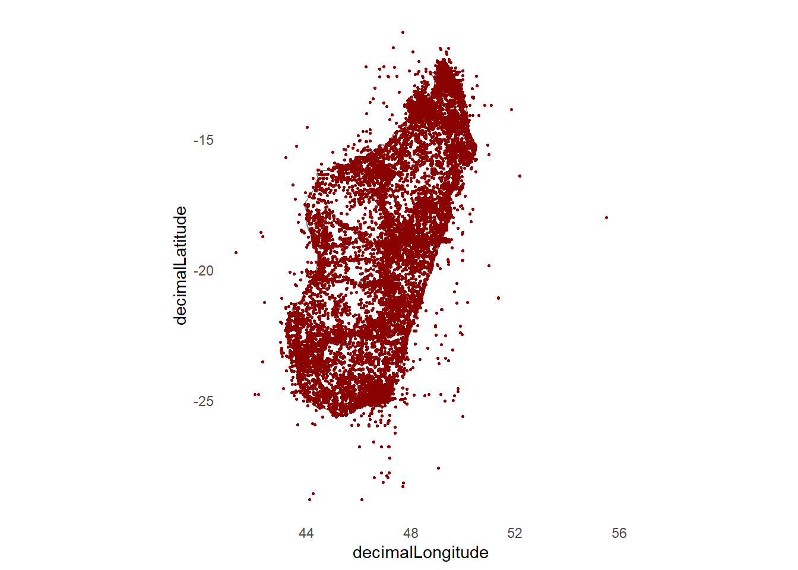
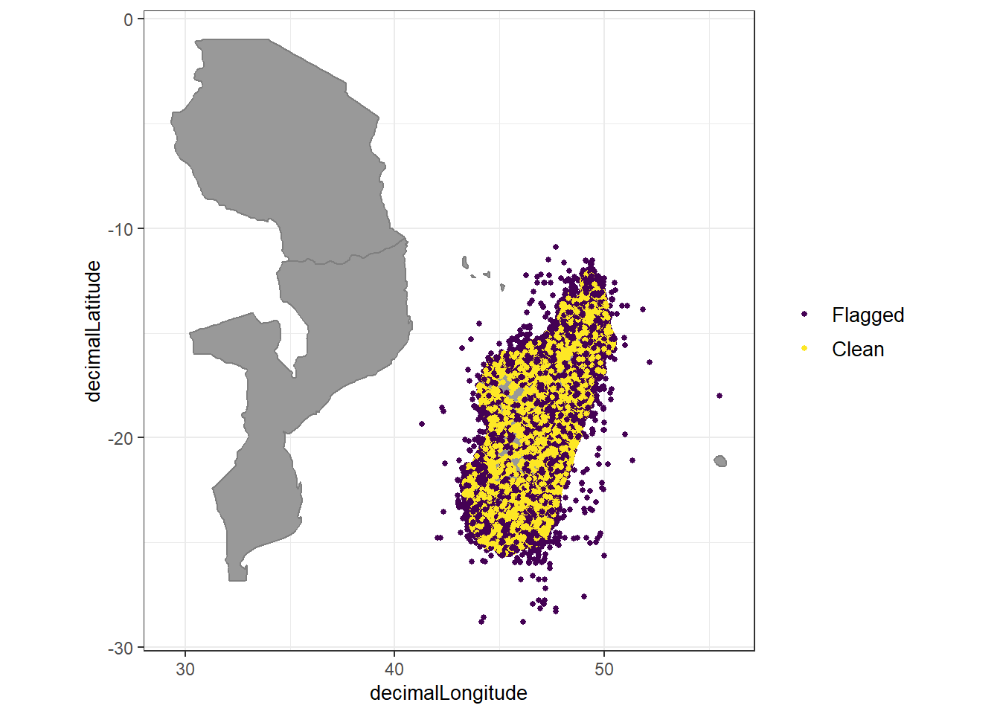
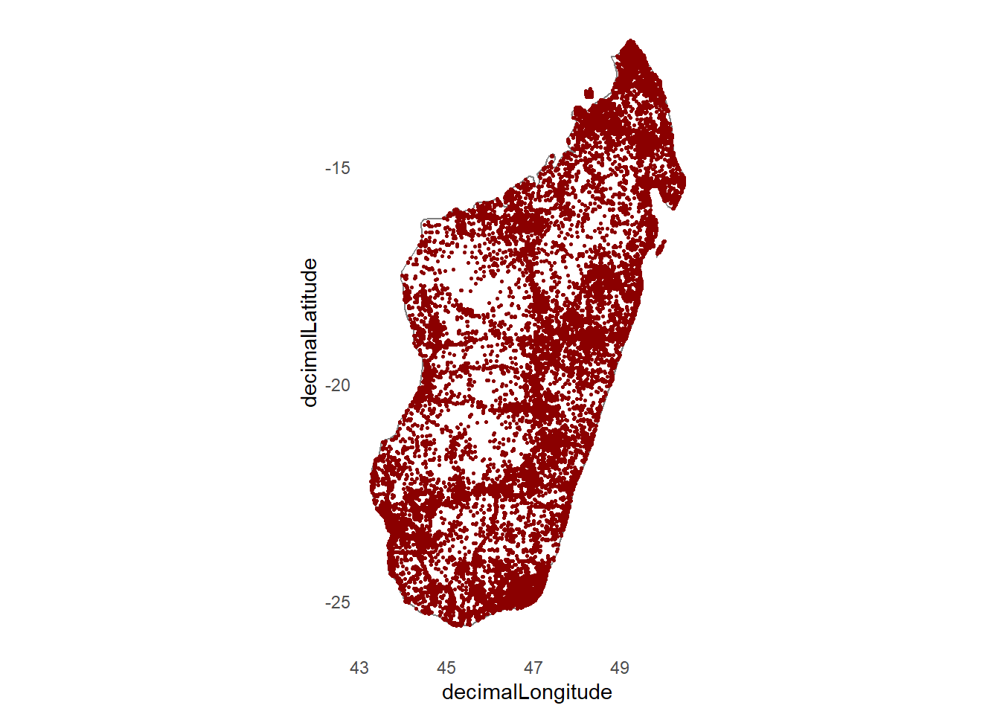

rm(list=ls())
gc() used (Mb) gc trigger (Mb) max used (Mb)
Ncells 844453 45.1 1340634 71.6 1340634 71.6
Vcells 1660407 12.7 8388608 64.0 2792775 21.4rm(list=ls())
gc() used (Mb) gc trigger (Mb) max used (Mb)
Ncells 844453 45.1 1340634 71.6 1340634 71.6
Vcells 1660407 12.7 8388608 64.0 2792775 21.4I wrote a function that I use in most of my projects to download and load R libraries. Usually I would save the function into it’s own R-script and load it using the source() function. However, for the purporse of this tutorial it’s best to see the actual function and try to understand what it does. It’s generally a good idea to do that for functions that have not been written by yourself in R. While the function I wrote is useful when you work a lot in R, you can also do the same job by hand using multiple lines of code: install.packages(“package1”), install.packages(“package2”), …, library(package1), library(package2), and so on.
# ------------------------------------------------------------------- #
# 1. Install packages if not already installed and load them
# ------------------------------------------------------------------- #
install_if_missing <-
function(packages) {
missing <-
packages[!packages %in% rownames(installed.packages())]
# first install the missing libraries
if (length(missing) > 0) {
install.packages(
missing,
repos = "https://cloud.r-project.org"
)
}
# now load the libraries into our active R session
x <- suppressPackageStartupMessages(
lapply(packages, require, character.only = TRUE)
)
rm(x)
}# list all packages needed for the code
package_list <-
c("readr",
"rgbif",
"rnaturalearth",
"CoordinateCleaner",
"here",
"dplyr",
"ggplot2",
"sf",
"skimr",
"cowplot",
"maps",
"tmap"
)# run the function - may require your input in the console
install_if_missing(package_list)
# delete the list object from our r environment
rm(package_list)It’s good practice to collect and set up some variables that we can use in our code at the top of each script. In that way, if you want to change something, it’s sufficient to do it once at the top of the script, instead of multiple times for each occurrence in the code. Usually I do it for character strings that I am using multiple times, data paths for input reading/output saving and plotting themes or color vectors. You can save a lot of time during post-processing if you set up your code in a smart way.
## Settings:
sf_use_s2(TRUE) # for spherical geometry in lat/long (not planar)
## Data paths:
path_subproj <- here("01_simple_mapping")
path_data <- here(path_subproj, "data")
path_gbif_rds <- here(path_data, "gbif_occ_cleaned.rds")
behrmann_wkt <- 'PROJCS["World_Behrmann",
GEOGCS["WGS 84",
DATUM["WGS_1984",
SPHEROID["WGS 84",6378137,298.257223563,
AUTHORITY["EPSG","7030"]],
AUTHORITY["EPSG","6326"]],
PRIMEM["Greenwich",0],
UNIT["Degree",0.0174532925199433]],
PROJECTION["Cylindrical_Equal_Area"],
PARAMETER["standard_parallel_1",30],
PARAMETER["central_meridian",0],
PARAMETER["false_easting",0],
PARAMETER["false_northing",0],
UNIT["metre",1,
AUTHORITY["EPSG","9001"]],
AXIS["Easting",EAST],
AXIS["Northing",NORTH],
AUTHORITY["ESRI","54017"]]'
## Plotting themes:
my_theme <-
theme(
plot.background = element_rect(fill = "#ffffff"),
panel.background = element_rect(fill = "#ffffff"),
panel.grid = element_blank(),
line = element_blank(),
rect = element_blank())Let’s check out some data on GBIF. Here we will download all occurrences of Tracheophytes (vascular plants) in Madagascar that are herbarium specimens, human observations or observations. This will likely be a big download. Feel free to reduce it further with smaller groups of organisms for testing things.
taxon_key <- name_backbone("Tracheophyta")$usageKey
country_code <- "MG"
basis_of_record <- c('PRESERVED_SPECIMEN', 'HUMAN OBSERVATION', 'OBSERVATION')We use the function occ_download() to prepare big downloads in the background. You will be notified when the download is ready and you can access it later through your user-account via gbif.org The download will be a .zip folder with a .csv inside. Unzip the folder and place the .csv in your data folder.
occ_download(
pred("country", country_code),
pred_in("basisOfRecord", basis_of_record),
pred("taxonKey", taxon_key),
pred("hasCoordinate", TRUE),
pred("hasGeospatialIssue", FALSE),
format = "SIMPLE_CSV"
)<<gbif download>>
Your download is being processed by GBIF:
https://www.gbif.org/occurrence/download/0016370-260903145123482
Most downloads finish within 15 min.
Check status with
occ_download_wait('0016370-260903145123482')
After it finishes, use
d <- occ_download_get('0016370-260903145123482') %>%
occ_download_import()
to retrieve your download.
Download Info:
Username: frieda0102
E-mail: frieda.woelke@gmail.com
Format: SIMPLE_CSV
Download key: 0016370-260903145123482
Created: 2026-09-13T17:57:03.145+00:00
Citation Info:
Please always cite the download DOI when using this data.
https://www.gbif.org/citation-guidelines
DOI:
Citation:
GBIF Occurrence Download https://www.gbif.org/occurrence/download/0016370-260903145123482 Accessed from R via rgbif (https://github.com/ropensci/rgbif) on 2026-09-13You can access the status of your download with occ_download_wait() and once it’s read, you can directly load it into R with occ_download_get() %>% occ_downlaod_import() (see below)
# Check status with:
occ_download_wait('0016370-260903145123482')
# download and import
dl <-
occ_download_get(
'0016370-260903145123482',
path = path_data,
overwrite = TRUE
) %>%
occ_download_import()
write.csv(dl, here(path_data, "gbif-dl-780k-0016370-260903145123482.csv"))
saveRDS(dl, here(path_data, "gbif_occ_780k_raw.rds"))status: succeeded
download is done, status: succeeded
<<gbif download metadata>>
Status: SUCCEEDED
DOI: 10.15468/dl.hfmmqn
Format: SIMPLE_CSV
Download key: 0016370-260903145123482
Created: 2026-09-13T17:57:03.145+00:00
Modified: 2026-09-13T20:04:36.801+00:00
Download link: https://api.gbif.org/v1/occurrence/download/request/0016370-260903145123482.zip
Total records: 786364In case it wasn’t ready during the same R session - for example if you started the download with occ_download() but it took too long to finish, you can fall back to downloading the .zip manually from GBIF, extracting the .csv that is in the folder, copy+paste it into your “data” folder and read it in with the following code. We will save it as .RDS as it saves space and is faster to read back into R.
dl <-
readr::read_delim(
here(path_data, "gbif-dl-780k_0016370-260903145123482.csv"),
delim = "\t", escape_double = FALSE,
trim_ws = TRUE)
saveRDS(dl, here(path_subproj, "data", "gbif_occ_780k_raw.rds"))Let’s apply some first filter on our data to reduce computing time later. There is some informative metadata included in the table that we got from GBIF and we will use them to apply a first quality filter on the data.
At the same time, we will reduce the number of columns in the dataset because we do not need them all for our purpose.
dat <-
dl %>%
# select only some columns:
dplyr::select(
species,
decimalLongitude,
decimalLatitude,
countryCode,
gbifID,
taxonRank,
genus,
family,
order,
coordinateUncertaintyInMeters,
year,
basisOfRecord,
stateProvince) %>%
# remove entries with missing lat or lon data:
filter(!is.na(decimalLongitude)) %>%
filter(!is.na(decimalLatitude)) %>%
# remove entries that have not been identify at least to family level
filter(!is.na(family)) %>%
# remove coordinates that are known to have low precision
filter(coordinateUncertaintyInMeters <= 50000 | is.na(coordinateUncertaintyInMeters)) %>%
select(!coordinateUncertaintyInMeters) %>%
# remove duplicates in the data frame
distinct() %>%
# factors are usually faster to calculate with than charaters. We will transform some columns from character to factor:
mutate(
countryCode = as.factor(countryCode),
taxonRank = as.factor(taxonRank),
genus = as.factor(genus),
family = as.factor(family),
order = as.factor(order),
basisOfRecord = as.factor(basisOfRecord),
stateProvince = as.factor(stateProvince)
)let’s inspect the difference between the original data and our pre-processed version:
dim(dl) # 771,230 rows and 50 columns[1] 771230 50dim(dat) # 770,788 rows and 12 columns[1] 770788 12dim(dl)-dim(dat) # we removed 442 rows and 38 columns[1] 442 38# let's see which columns have lot's of NAs
skim(dat)| Name | dat |
| Number of rows | 770788 |
| Number of columns | 12 |
| _______________________ | |
| Column type frequency: | |
| character | 1 |
| factor | 7 |
| numeric | 4 |
| ________________________ | |
| Group variables | None |
Variable type: character
| skim_variable | n_missing | complete_rate | min | max | empty | n_unique | whitespace |
|---|---|---|---|---|---|---|---|
| species | 172340 | 0.78 | 4 | 42 | 0 | 12837 | 0 |
Variable type: factor
| skim_variable | n_missing | complete_rate | ordered | n_unique | top_counts |
|---|---|---|---|---|---|
| countryCode | 0 | 1.00 | FALSE | 1 | MG: 770788 |
| taxonRank | 0 | 1.00 | FALSE | 7 | SPE: 570945, GEN: 155761, FAM: 16579, VAR: 15718 |
| genus | 16579 | 0.98 | FALSE | 2182 | Dio: 13697, Bul: 12407, Psy: 12128, Cro: 10901 |
| family | 0 | 1.00 | FALSE | 292 | Rub: 82513, Fab: 54603, Orc: 42167, Apo: 36250 |
| order | 0 | 1.00 | FALSE | 69 | Gen: 125573, Mal: 100237, Fab: 55546, Asp: 51732 |
| basisOfRecord | 0 | 1.00 | FALSE | 1 | PRE: 770788 |
| stateProvince | 131022 | 0.83 | FALSE | 256 | Toa: 172152, Ant: 150935, Tol: 114874, Fia: 75631 |
Variable type: numeric
| skim_variable | n_missing | complete_rate | mean | sd | p0 | p25 | p50 | p75 | p100 | hist |
|---|---|---|---|---|---|---|---|---|---|---|
| decimalLongitude | 0 | 1.00 | 47.83 | 1.680000e+00 | 41.30 | 46.90 | 48.30 | 49.20 | 55.5 | ▁▃▇▁▁ |
| decimalLatitude | 0 | 1.00 | -18.41 | 3.900000e+00 | -28.81 | -21.48 | -18.73 | -14.52 | -10.9 | ▁▆▇▆▆ |
| gbifID | 0 | 1.00 | 2953642168.43 | 1.621758e+09 | 47759856.00 | 1259455679.50 | 4031487885.50 | 4061690937.25 | 6517462303.0 | ▆▂▁▇▁ |
| year | 17531 | 0.98 | 1995.03 | 2.659000e+01 | 1661.00 | 1992.00 | 2004.00 | 2011.00 | 2026.0 | ▁▁▁▁▇ |
# and remove the unfiltered file to free up memory
rm(dl)Looks like we only have ‘preserved specimen’ as basisOfRecord. We can thus delete that column too.
dat <-
dat %>%
select(!basisOfRecord)We can also see that we have species names for 77.6% of entries and genus names for 97.8% of entries. ca. 2% of entries are missing a year. Since we are not going to do any temporal analyses this does not matter too much for now.
ggplot() +
coord_fixed() +
annotation_borders(
"world",
regions = "Madagascar",
colour = "gray50",
fill = "white"
) +
geom_point(
data = dat,
aes(x = decimalLongitude, y = decimalLatitude),
colour = "darkred",
size = 0.5
) +
my_theme
We can see that there are lots of data points outside of terrestrial Madagascar. We can remove those, and other false entries using the CoordinateCleaner R package.
dat <-
data.frame(dat)
# CoordinateCleaner requires ISO3 country code (3-letter)
dat$countryCode <- "MDG"
# let's flag occurrences with geographic issues next:
# flag problems
flags <-
clean_coordinates(
x = dat,
lon = "decimalLongitude",
lat = "decimalLatitude",
countries = "countryCode",
species = "species",
tests = c(
"duplicates",
"capitals",
"centroids",
# "equal",
# "zeros",
"countries",
"institutions",
"seas")
) Testing coordinate validityFlagged 0 records.Testing country capitalsFlagged 4172 records.Testing country centroidsFlagged 2275 records.Testing sea coordinatesReading 'ne_50m_land.zip' from naturalearth...
Flagged 34549 records.
Testing country identity
Flagged 34549 records.
Testing biodiversity institutions
Flagged 147 records.
Testing duplicates
Flagged 444426 records.
Flagged 463576 of 770788 records, EQ = 0.6.summary(flags) .val .cap .cen .sea .con .inst .dpl .summary
0 4172 2275 34549 34549 147 444426 463576 Testing coordinate validity
Flagged 0 records.
Testing country capitals
Flagged 4172 records.
Testing country centroids
Flagged 2275 records.
Testing sea coordinates
Reading ne_50m_land.zip from naturalearth...
Flagged 34549 records.
Testing country identity
Flagged 34549 records.
Testing biodiversity institutions
Flagged 147 records.
Testing duplicates
Flagged 444426 records.
Flagged 463576 of 770788 records, EQ = 0.6.
.val .cap .cen .sea .con .inst .dpl .summary
0 4172 2275 34549 34549 147 444426 463576
We dropped ca. 60% of our data entries. That’s no problem because we started out with a lot to begin with. Let’s visualize the flagged occurrences:
plot(flags, lon = "decimalLongitude", lat = "decimalLatitude")Warning: `aes_string()` was deprecated in ggplot2 3.0.0.
ℹ Please use tidy evaluation idioms with `aes()`.
ℹ See also `vignette("ggplot2-in-packages")` for more information.
ℹ The deprecated feature was likely used in the CoordinateCleaner package.
Please report the issue at
<https://github.com/ropensci/CoordinateCleaner/issues>.
and exclude them from our data and save the cleaned data to .rds
#Exclude problematic records
dat_cl <- dat[flags$.summary, ]
#The flagged records
dat_fl <- dat[!flags$.summary, ]
# save to file
saveRDS(dat_cl, path_gbif_rds)Let’s look at what kind of data we just removed.
skim(dat_fl)| Name | dat_fl |
| Number of rows | 463576 |
| Number of columns | 11 |
| _______________________ | |
| Column type frequency: | |
| character | 2 |
| factor | 5 |
| numeric | 4 |
| ________________________ | |
| Group variables | None |
Variable type: character
| skim_variable | n_missing | complete_rate | min | max | empty | n_unique | whitespace |
|---|---|---|---|---|---|---|---|
| species | 137260 | 0.7 | 7 | 34 | 0 | 10906 | 0 |
| countryCode | 0 | 1.0 | 3 | 3 | 0 | 1 | 0 |
Variable type: factor
| skim_variable | n_missing | complete_rate | ordered | n_unique | top_counts |
|---|---|---|---|---|---|
| taxonRank | 0 | 1.00 | FALSE | 6 | SPE: 311829, GEN: 123651, FAM: 13609, VAR: 8212 |
| genus | 13609 | 0.97 | FALSE | 2037 | Dio: 9901, Bul: 8362, Psy: 7750, Cro: 6203 |
| family | 0 | 1.00 | FALSE | 283 | Rub: 52298, Fab: 29839, Orc: 26782, Apo: 21834 |
| order | 0 | 1.00 | FALSE | 69 | Gen: 78116, Mal: 60818, Asp: 32290, Fab: 30376 |
| stateProvince | 59455 | 0.87 | FALSE | 169 | Toa: 115952, Ant: 103630, Tol: 74384, Fia: 45004 |
Variable type: numeric
| skim_variable | n_missing | complete_rate | mean | sd | p0 | p25 | p50 | p75 | p100 | hist |
|---|---|---|---|---|---|---|---|---|---|---|
| decimalLongitude | 0 | 1.00 | 47.90 | 1.660000e+00 | 41.30 | 46.98 | 48.31 | 49.23 | 55.5 | ▁▂▇▁▁ |
| decimalLatitude | 0 | 1.00 | -18.35 | 3.900000e+00 | -28.81 | -21.27 | -18.63 | -14.52 | -10.9 | ▁▆▇▆▆ |
| gbifID | 0 | 1.00 | 2941078567.17 | 1.581934e+09 | 47759860.00 | 1259971704.50 | 4031655736.00 | 4061837716.50 | 6517460337.0 | ▆▂▁▇▁ |
| year | 8612 | 0.98 | 1997.50 | 2.504000e+01 | 1763.00 | 1993.00 | 2005.00 | 2012.00 | 2026.0 | ▁▁▁▁▇ |
And what kind of data we have left:
# skim
skim(dat_cl)| Name | dat_cl |
| Number of rows | 307212 |
| Number of columns | 11 |
| _______________________ | |
| Column type frequency: | |
| character | 2 |
| factor | 5 |
| numeric | 4 |
| ________________________ | |
| Group variables | None |
Variable type: character
| skim_variable | n_missing | complete_rate | min | max | empty | n_unique | whitespace |
|---|---|---|---|---|---|---|---|
| species | 35080 | 0.89 | 4 | 42 | 0 | 12505 | 0 |
| countryCode | 0 | 1.00 | 3 | 3 | 0 | 1 | 0 |
Variable type: factor
| skim_variable | n_missing | complete_rate | ordered | n_unique | top_counts |
|---|---|---|---|---|---|
| taxonRank | 0 | 1.00 | FALSE | 7 | SPE: 259116, GEN: 32110, VAR: 7506, SUB: 5319 |
| genus | 2970 | 0.99 | FALSE | 1991 | Cro: 4698, Psy: 4378, Bul: 4045, Dio: 3796 |
| family | 0 | 1.00 | FALSE | 275 | Rub: 30215, Fab: 24764, Orc: 15385, Eup: 14570 |
| order | 0 | 1.00 | FALSE | 69 | Gen: 47457, Mal: 39419, Fab: 25170, Lam: 20157 |
| stateProvince | 71567 | 0.77 | FALSE | 222 | Toa: 56200, Ant: 47305, Tol: 40490, Fia: 30627 |
Variable type: numeric
| skim_variable | n_missing | complete_rate | mean | sd | p0 | p25 | p50 | p75 | p100 | hist |
|---|---|---|---|---|---|---|---|---|---|---|
| decimalLongitude | 0 | 1.00 | 4.77100e+01 | 1.72000e+00 | 43.26 | 46.81 | 4.82300e+01 | 49.16 | 50.47 | ▃▂▇▇▇ |
| decimalLatitude | 0 | 1.00 | -1.84900e+01 | 3.91000e+00 | -25.57 | -21.90 | -1.88000e+01 | -14.52 | -12.08 | ▅▅▇▃▇ |
| gbifID | 0 | 1.00 | 2.97260e+09 | 1.67989e+09 | 47759856.00 | 1259182964.75 | 4.03142e+09 | 4032186776.25 | 6517462303.00 | ▆▂▁▇▁ |
| year | 8919 | 0.97 | 1.99126e+03 | 2.83800e+01 | 1661.00 | 1987.00 | 2.00300e+03 | 2009.00 | 2026.00 | ▁▁▁▁▇ |
# map the clean data
ggplot() +
coord_fixed() +
annotation_borders(
"world",
regions = "Madagascar",
colour = "gray50",
fill = "white"
) +
geom_point(
data = dat_cl,
aes(x = decimalLongitude, y = decimalLatitude),
colour = "darkred",
size = 0.5
) +
my_theme